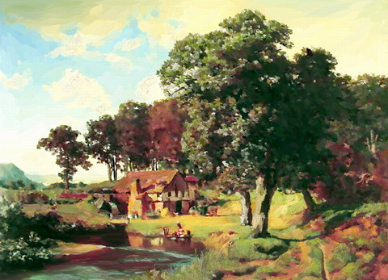
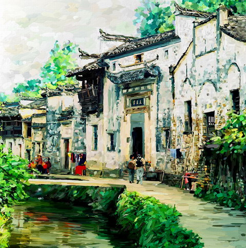
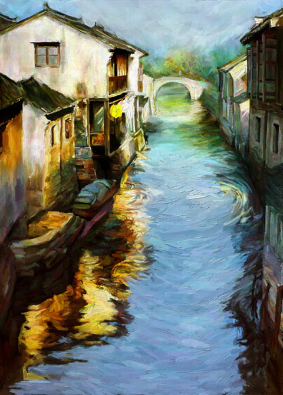

田园风景
夏日的乡村风光宜人，天是那么的蓝，蓝似广阔的大海；云是那么的白，白得清爽，白得像刚弹出的棉花。空气中似乎带着些甜味儿，凉凉的直入肺腑，使你忍不住要多呼几口。四周静静的，没有城市的喧闹，只有清脆的鸟鸣，知了的歌声和风吹树叶的沙沙声，汇成一首悠扬的乡村交响曲。放眼望去，远处水中的一片绿诱你地走上前去，好一个小池塘！塘中密密的荷叶呈现出一片耀眼的新绿，好像一张翡翠色的毯子，轻轻覆盖在水面上。一枝枝荷花亭亭玉立，有粉的，粉得像霞；有白的，白得似雪；有红的，红得如火。在骄阳的照耀下溢满了“接天莲叶无穷碧，映日荷花别样红”的诗意。几只蜻蜓从水面上一掠而过，轻点水面，一圈圈美丽的涟漪荡漾开去，早惊动了水中的游鱼，“噗”的打了个水花，害羞地钻进水草丛中去了。呵，这水真清啊！清得可以数得清水底每一粒细小的泥沙；又宛如一面镜子，把我，蓝天，白云，岸边的树，天空中的鸟儿统统纳入她的胸怀，似乎水中还有一个世界似的。风儿轻轻摇着荷花，又顽皮地抚弄着荷花，淘气地将平得像镜子般的水面弄得皱巴巴的，同时也带来一阵阵清。 夏日的乡村风光宜人，天是那么的蓝，蓝似广阔的大海；云是那么的白，白得清爽，白得像刚弹出的棉花。空气中似乎带着些甜味儿，凉凉的直入肺腑，使你忍不住要多呼几口。四周静静的，没有城市的喧闹，只有清脆的鸟鸣，知了的歌声和风吹树叶的沙沙声，汇成一首悠扬的乡村交响曲。放眼望去，远处水中的一片绿诱你地走上前去，好一个小池塘！塘中密密的荷叶呈现出一片耀眼的新绿，好像一张翡翠色的毯子，轻轻覆盖在水面上。一枝枝荷花亭亭玉立，有粉的，粉得像霞；有白的，白得似雪；有红的，红得如火。在骄阳的照耀下溢满了“接天莲叶无穷碧，映日荷花别样红”的诗意。几只蜻蜓从水面上一掠而过，轻点水面，一圈圈美丽的涟漪荡漾开去，早惊动了水中的游鱼，“噗”的打了个水花，害羞地钻进水草丛中去了。呵，这水真清啊！清得可以数得清水底每一粒细小的泥沙；又宛如一面镜子，把我，蓝天，白云，岸边的树，天空中的鸟儿统统纳入她的胸怀，似乎水中还有一个世界似的。风儿轻轻摇着荷花，又顽皮地抚弄着荷花，淘气地将平得像镜子般的水面弄得皱巴巴的，同时也带来一阵阵清。

江南风景
江南水乡是一个令人向往的地方，我生在江南，长在江南，对江南的一切事物都很有感触，我喜欢江南，尤其是江南秋季的景色，让我着迷，把我带到了一个独特的地方，让我尽享其中。江南的秋季江南秋季是一首伤感的歌，谱写了一段离愁。烂漫在枝头的树叶已停止了舞动，只随着秋风轻轻摇曳着，飘零着。满足的微笑搁浅在树叶的嘴角，纷纷扬扬的叶子旋转着，似一场春雨，却抹上了成熟。遥想多年前，枫叶簇拥时，我却离开了水乡江南，临别前串串泪珠轻轻捋动枫叶，留下淡淡不舍。江南的雨江南的雨诗意尽染，飘缈似雾，迷离了眼前的巷角屋檐。潇潇细雨轻盈地飞入湖面，荡漾起些许凉意，清亮的雨珠附着窗檐，笑意地飘入浅塘，无依恋，无回首，只一瞬。雨水哼着轻快小调，散着清新，透着微凉，窗间留有一缕湿润。细雨在明瓦上跃动着生气，闪现着清澈透明;在灰瓦上坠落着朴实，模糊了窗前暇想。 江南水乡是一个令人向往的地方，我生在江南，长在江南，对江南的一切事物都很有感触，我喜欢江南，尤其是江南秋季的景色，让我着迷，把我带到了一个独特的地方，让我尽享其中。江南的秋季江南秋季是一首伤感的歌，谱写了一段离愁。烂漫在枝头的树叶已停止了舞动，只随着秋风轻轻摇曳着，飘零着。满足的微笑搁浅在树叶的嘴角，纷纷扬扬的叶子旋转着，似一场春雨，却抹上了成熟。遥想多年前，枫叶簇拥时，我却离开了水乡江南，临别前串串泪珠轻轻捋动枫叶，留下淡淡不舍。江南的雨江南的雨诗意尽染，飘缈似雾，迷离了眼前的巷角屋檐。潇潇细雨轻盈地飞入湖面，荡漾起些许凉意，清亮的雨珠附着窗檐，笑意地飘入浅塘，无依恋，无回首，只一瞬。雨水哼着轻快小调，散着清新，透着微凉，窗间留有一缕湿润。细雨在明瓦上跃动着生气，闪现着清澈透明;在灰瓦上坠落着朴实，模糊了窗前暇想。

古典风情
跟《南乡子》一样，《江城子》开始时也是单调，后来在宋词中变成了双调。这一曲后来反而不大见咏古情怀，而悼亡、言志、寄托咏怀之作却几乎每一首都是经典，而奇怪的是不管是用它填什么情绪的词意，居然都是那么贴切，这不能不说是词牌中的一个特例。苏轼爱作《江城子》，“十年生死两茫茫”自不必说，他还用它自画像“老夫聊发少年狂”，情绪之截然两端让人惊叹这一曲调的万般灵动。喜欢秦观的这一首，感觉情绪上有些似李珣，都是一种克制的隐忍的人生，纵使感情到了无控制的时候，他们的脸上也是平静的，纵使有泪如海也无声：西城杨柳弄春柔。动离忧，泪难收。犹记多情曾为系归舟。碧野朱桥当日事，人不见，水空流。 韶华不为少年留。恨悠悠，几时休?飞絮落花时候一登楼。便做春江都是泪，流不尽，许多愁。 跟《南乡子》一样，《江城子》开始时也是单调，后来在宋词中变成了双调。这一曲后来反而不大见咏古情怀，而悼亡、言志、寄托咏怀之作却几乎每一首都是经典，而奇怪的是不管是用它填什么情绪的词意，居然都是那么贴切，这不能不说是词牌中的一个特例。苏轼爱作《江城子》，“十年生死两茫茫”自不必说，他还用它自画像“老夫聊发少年狂”，情绪之截然两端让人惊叹这一曲调的万般灵动。喜欢秦观的这一首，感觉情绪上有些似李珣，都是一种克制的隐忍的人生，纵使感情到了无控制的时候，他们的脸上也是平静的，纵使有泪如海也无声：西城杨柳弄春柔。动离忧，泪难收。犹记多情曾为系归舟。碧野朱桥当日事，人不见，水空流。 韶华不为少年留。恨悠悠，几时休?飞絮落花时候一登楼。便做春江都是泪，流不尽，许多愁。